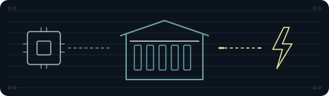

Aktuelle fondsvægte og største selskaber hentes fra Azure i afsnittet nedenfor. Tal i de redaktionelle diagrammer og selskabseksempler er historiske pr. 16.10.2026; de opdateres ikke som aktuelle fondstal. Se temaets aktuelle selskaber ↓

Datacentre
Hvad skal der til for, at maskinerne arbejder sammen?
En AI-beregning skal fordeles mellem servere, og resultaterne skal samles igen. Derfor handler datacentre også om kabler, lasere, netværk og drift. Zoom ud fra serveren og se, hvad der binder maskinerne sammen.
Andel af hele fonden, afdelingen PMINDI pr. 16.10.2026
Strømmen og chippen har hver deres tema. Her handler det om alt det imellem.
Se, hvor pengene liggerIllustration: NewDeal Invest.
af PMINDI er placeret i temaet.
Andele pr. 16.10.2026. Et felt er 1 % af hele fonden. Temaerne er NewDeal Invests redaktionelle opdeling.
Se fordelingen og datagrundlaget ↓NewDeal Invests perspektiv
Dette uddrag handler om forudsætningerne for kapacitet. Ugebrevets efterfølgende forventninger til markedet er ikke gengivet.
“Man skal også have chips, energi, nettilslutning, udstyr, jord og politiske godkendelser.”Mads Christiansen, fondschef og medstifter af NewDeal Invest · 26.07.2026
Uge 27 - Bygger vi for meget AI? ↗
Fonden
Temaets andel af fonden
12,59%
af fonden ligger i datacentre, netværk og cloud.
- Selskaber47 af fondens 373
- Største selskab i temaetSivers Semiconductors 1,01 % af fonden (laver bl.a. lasere)
- Plads blandt fondens 12 temaerNr. 3
Andel af hele fonden, afdelingen PMINDI pr. 16.10.2026
Datacentre er et af de 12 temaer, NewDeal Invest deler fondens selskaber op i. Selskaberne i temaet bygger, udstyrer eller driver datacentre. Intet enkelt selskab fylder meget, så pengene er spredt på mange selskaber.
Der bygges meget
ca. 409 mia. USD
Amazon, Microsoft, Alphabet og Meta investerede i deres seneste regnskabsår tilsammen ca. 409 mia. USD i bygninger og udstyr. Det er omkring 2.707 mia. kr. eller omkring 87 % af Danmarks BNP i 2025, altså værdien af alt, der blev produceret i Danmark det år. Beløbet dækker mere end datacentre.
Kilde: selskabernes årsrapporter, omregnet med Nationalbankens gennemsnitskurs for 2025. Alphabet er ikke blandt fondens selskaber. Se Kilder.
Hovedgrebet
Det, der binder maskinerne sammen
Inde i en server løber data som elektriske signaler i kobber. Men når tusindvis af servere skal arbejde sammen, er afstandene for lange til kobber alene. Så sendes data som lys gennem tynde glastråde, der kaldes fiber. Lasere og optiske moduler laver de elektriske signaler om til lys og tilbage igen, og netværksudstyr sørger for, at data kommer frem til den rigtige server.
I fonden er forbindelserne den største del af temaet. Mere end halvdelen af pengene i temaet ligger dér. Temaets største selskab, Sivers Semiconductors, er et af dem.

Selskaberne
Zoom ud fra én server
Andel af hele fonden, afdelingen PMINDI pr. 16.10.2026
I midten står én server. Zoom ud, og den bliver til tusindvis af servere i en hal, forbundet med kabler, lys og netværk. Hver flade er tegnet efter, hvor stor en del af fonden laget fylder.
Tryk på et selskab for at se, hvad det laver.
Kablerne, lyset og netværket, der binder serverne sammen.
En laser laver lys, der kan tændes og slukkes meget hurtigt, og sådan sendes data gennem fiber. Et optisk modul, også kaldet en transceiver, sidder i hver ende af fiberen. Fotonik betyder teknik, der arbejder med lys.
Kobberkabler forbinder det, der står tæt på hinanden, og fiberkabler bærer lyset over længere afstand. Stikkene holder forbindelsen præcis og tæt. Selskaberne leverer også til andre kunder end datacentre.
Netværket bestemmer, hvor data skal hen, i hallen og mellem datacentre. Andre selskaber laver udstyr, der måler og tester forbindelserne. Forbindelseschips får mange chips i samme system til at arbejde som én stor computer.
Bygningen, kølingen og dem, der driver hallen og lejer regnekraften ud.
Cloud betyder, at man lejer regnekraft og lager over nettet i stedet for at eje sine egne servere. Oracle og Microsoft er store udbydere, hvor cloud er en del af en stor softwareforretning. Flere af de øvrige kommer fra bitcoin-mining, altså at bruge computere og strøm til at registrere bitcoin-transaktioner mod betaling i bitcoin. Nu bruger de deres strøm og bygninger til AI.
Før den første server tændes, skal der være en bygning, el og køling. Serverne laver meget varme, og kølingen leder den væk. Selskaberne her er ingeniørfirmaer og entreprenører, der tegner, bygger og installerer.
Serverne og de skabe, de sidder i.
Servere og racks1,51 % · 8 selskaber
En server er en computer uden skærm, der arbejder døgnet rundt. Serverne sidder stablet i høje skabe, der kaldes racks. Flere af selskaberne er kontraktproducenter, altså fabrikker, der producerer for andre.
Kendte navne fylder lidt: Microsoft 0,11 % · Super Micro Computer 0,10 % · Cisco Systems 0,09 % · Dell 0,04 % · Arista Networks 0,03 %.
Alle procenter er andele af hele fonden, afdelingen PMINDI pr. 16.10.2026, og ikke af temaet. Hvert lags procent er de små grupper i laget lagt sammen. Hvor stor en del af selskabernes omsætning der kommer fra AI, kan ikke opgøres. Mange selskaber oplyser ikke tallet for sig. Sanmina oplyser fx kun ét samlet tal for cloud og AI-infrastruktur. I et datacenter bærer de samme kabler, lasere og servere både AI og almindelige apps.
Naboerne
Også med en fod i datacentre
Nogle selskaber leverer også til datacentre, men hører i fonden til et andet tema, fordi det er der, deres hovedforretning er. Det gælder bl.a. selskaber, der leverer strøm, chips og harddiske.
31 selskaber med i alt 10,36 % af hele fonden, afdelingen PMINDI pr. 16.10.2026. De tæller ikke med i de 12,59 %.
- SoftBank GroupHovedtema: Platformsøkonomi1,54 % af fonden
- SpaceXHovedtema: Rumfart1,38 % af fonden
- BroadcomHovedtema: Chips og halvledere0,56 % af fonden
- CleanSparkHovedtema: Krypto0,52 % af fonden
- GeneracHovedtema: Energi og elnet0,51 % af fonden
- Navitas SemiconductorHovedtema: Chips og halvledere0,51 % af fonden
- BitdeerHovedtema: Krypto0,49 % af fonden
- Western DigitalHovedtema: Chips og halvledere0,44 % af fonden
- Power Solutions InternationalHovedtema: Energi og elnet0,43 % af fonden
- AmazonHovedtema: Platformsøkonomi0,41 % af fonden
- Seagate TechnologyHovedtema: Chips og halvledere0,35 % af fonden
- Galaxy DigitalHovedtema: Krypto0,34 % af fonden
- Riot PlatformsHovedtema: Krypto0,32 % af fonden
- ERockHovedtema: Energi og elnet0,27 % af fonden
- NVIDIAHovedtema: Chips og halvledere0,26 % af fonden
- Keel InfrastructureHovedtema: Krypto0,24 % af fonden
- Talen EnergyHovedtema: Energi og elnet0,24 % af fonden
- ChemoursHovedtema: Råstoffer0,23 % af fonden
- Bloom EnergyHovedtema: Energi og elnet0,21 % af fonden
- OkloHovedtema: Energi og elnet0,17 % af fonden
- Quanta ServicesHovedtema: Energi og elnet0,16 % af fonden
- Bit DigitalHovedtema: Krypto0,15 % af fonden
- Monolithic Power SystemsHovedtema: Chips og halvledere0,12 % af fonden
- Solaris Energy InfrastructureHovedtema: Energi og elnet0,10 % af fonden
- MarvellHovedtema: Chips og halvledere0,09 % af fonden
- CaterpillarHovedtema: Energi og elnet0,08 % af fonden
- CumminsHovedtema: Energi og elnet0,07 % af fonden
- AlibabaHovedtema: Platformsøkonomi0,05 % af fonden
- MetaHovedtema: Platformsøkonomi0,05 % af fonden
- AMDHovedtema: Chips og halvledere0,04 % af fonden
- CloudflareHovedtema: Software & AI0,03 % af fonden
Hovedtemaet er det tema, selskabet tæller med i.
Set udefra
Inde i hallen og i nyhederne
Se efter: Er det beregningen, forbindelserne eller den fysiske drift, der ændres?
Bloomberg @business · på engelsk
Kort fortalt Ifølge Bloomberg skyldtes det stigende efterspørgsel efter netværksudstyr til datacentre, at Nokias overskud i tredje kvartal blev højere, end analytikerne havde ventet. Bloomberg skriver, at investeringerne i AI-infrastruktur vokser kraftigt. Nokia er ikke blandt fondens selskaber.
Hvad skal du lægge mærke til? Læs opslaget sammen med afsnittet om forbindelserne. Er det beregningen, forbindelserne eller den fysiske drift, der ændres?
CNBC @CNBC · på engelsk
Kort fortalt Ifølge CNBC har Nvidia præsenteret DSX Pod AI Factory, der samler syv racks med NVIDIAs nye AI-computere (Vera Rubin) i en enhed på størrelse med en standardcontainer, som vejer omkring 28.000 kg. Ifølge Nvidia er den bygget til at blive fragtet på lastbil ad almindelige veje, og kabler og væskekøling samles på fabrikken.
Hvad skal du lægge mærke til? Læs opslaget sammen med afsnittet om maskinerne. Er det beregningen, forbindelserne eller den fysiske drift, der ændres?
The Information @theinformation · på engelsk
Kort fortalt Ifølge The Information bygger tech-chefer og AI-udviklere egne små datacentre i kældre, garager og hjemmekontorer for at undgå at betale for cloudberegning. Mediet skriver, at maskinerne giver mere kontrol over AI-modellerne, men også skaber dyre problemer med køling.
Hvad skal du lægge mærke til? Læs opslaget sammen med afsnittet om hallen og driften. Er det beregningen, forbindelserne eller den fysiske drift, der ændres?
Opslagene er udvalgt af teamet bag NewDeal Invest. Afsenderne og de nævnte selskaber står ikke bag denne side, og opslagene er ikke fondens vurdering.
Det skal man vide om temaet
- Få store kunder. Hos flere af selskaberne kommer meget af omsætningen fra få kunder. Core Scientific lejer kun datacenterplads ud til CoreWeave (Core Scientific, årsrapport 2025 (åbner i nyt vindue)).
- Investeringer før indtægter. Et datacenter skal bygges og udstyres, før det kan lejes ud. CoreWeave havde i 2025 en omsætning på 5.131 mio. USD og et underskud på 1.167 mio. USD (CoreWeave, årsrapport 2025 (åbner i nyt vindue)). Fermi havde ingen omsætning pr. 30.06.2026 (Fermi, kvartalsrapport (åbner i nyt vindue)).
- Teknologi under udvikling. Nogle af selskaberne udvikler stadig deres teknologi og har kun en meget lille omsætning, fx Lightwave Logic (Lightwave Logic, årsrapport 2025 (åbner i nyt vindue)).
- Omstilling fra bitcoin-mining. Flere af de selskaber, der lejer regnekraft ud, driver stadig bitcoin-mining ved siden af. Hos Cipher Digital kom al omsætning i 2025 og første halvår 2026 fra mining (årsrapport 2025 (åbner i nyt vindue) og kvartalsrapport (åbner i nyt vindue)).
- Datacentre er ikke hele forretningen. Hos nogle selskaber er datacentre kun en del af salget. Hos nLight kom 67 % af omsætningen fra forsvar og luftfart (nLight, årsrapport 2025 (åbner i nyt vindue)).
Kilder: selskabernes årsrapporter og kvartalsrapporter, linket ved hvert tal.
Videre
Det hænger sammen

Datacentrene hænger sammen med strømmen, der driver dem, chippen, der regner i dem, og bitcoin-mining, som flere af selskaberne kommer fra.
Kilder og kreditering
Tal
- Andele: afdelingen PMINDI pr. 16.10.2026 (fondens data). Temaer og grupper: NewDeal Invests egen opdeling.
- Selskabsoplysninger: selskabernes årsrapporter og kvartalsrapporter, linket ved hvert tal.
- Investeringer i bygninger og udstyr: årsrapporter fra Amazon (åbner i nyt vindue), Microsoft (åbner i nyt vindue), Alphabet (åbner i nyt vindue) og Meta (åbner i nyt vindue). Omregnet med Nationalbankens gennemsnitskurs for 2025 (Danmarks Statistik, DNVALA). BNP: Danmarks Statistik, NAN1.
Billeder, video og opslag
- Tegninger, ikoner og videoplakat: NewDeal Invest.
- Foto af rack: Derrick Coetzee, “Rear of rack at NERSC data center - closeup” (åbner i nyt vindue), Wikimedia Commons, CC0 (åbner i nyt vindue) (beskåret). Taget i NERSC-datacentret i Californien.
- Video: Google Cloud, “Inside a Google Cloud TPU Data Center”, YouTube, 29.08.2023.
- Opslag: CNBC, Bloomberg og The Information på X. Opslagene vises kun, hvis du klikker.
- Logoer tilhører de enkelte selskaber.
Selskaberne fra A til Å
Vælg et selskab og læs om forretningen.